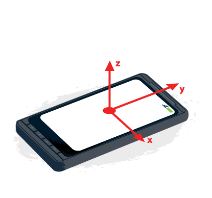

Reactive Orientation
@zapletal_martin, @teroxik
Application overview
- HTML5 orientation API
- Ember.js
- Three.js
- Play framework 2.3
- Iteratee/Enumerator
- Web socket actors
- Scalaz
- Bootstrap
Iteratee/Enumerator/Enumeratee
- abstraction over data streams
- handle data streams reactively in a non-blocking, generic & composable way for modern web programming in distributed environments
- Websockets in our case
- Iteratee => Consumer
- Enumerator => Producer
- Enumerator => Adapter
Iteratee/Enumerator/Enumeratee
- Iteratee => Consumer - Iteratee[A,E] - consumes value A and eventually produces value B
object Step { case class Done[+A, E](a: A, remaining: Input[E]) extends Step[E, A] case class Cont[E, +A](k: Input[E] => Iteratee[E, A]) extends Step[E, A] case class Error[E](msg: String, input: Input[E]) extends Step[E, Nothing] }Input[E] - El[E],Empty,EOF
- Enumerator => Producer, pushes data to Iteratee, contains methods for reading streams
trait Enumerator[E] { /** * Apply this Enumerator to an Iteratee */ def apply[A](i: Iteratee[E, A]): Future[Iteratee[E, A]] }Another method for creation of Enumerators is by using channels.
val enumerator = Concurrent.unicast[String](onStart = channel => { channel.push("Hello") channel.push("World") }) - Enumeratee => Adapter - used for mapping Iteratees/Enumerators to Iteratees/Enumerators which accepts different types
Web Sockets
- Call backs - onOpen, onClose, onMessage
- Two way realtime communication - send method
- well supported
- Iteratee => Consumer
- Enumerator => Producer
Web Sockets - Iteratees
val (dataEnumerator, dataChannel) = Concurrent.broadcast[JsValue]
def mobileWebSocket = WebSocket.acceptWithActor[OrientationChangeEvent, JsValue] { request => out =>
Props(new StreamMergingActor(dataChannel))
}
def dashboardWebSocket = WebSocket.using[JsValue] { request =>
(Iteratee.ignore, dataEnumerator)
}
- You have to provide in and out channels
- you can get a broadcast channel on which you can listen
-
// Concurrent.broadcast returns (Enumerator, Concurrent.Channel) val (out, channel) = Concurrent.broadcast[String] - We used Iteratee/Enumerator approach in the beginning in the beginnig and the we combined it with the Web Socket Actors
Web Sockets - Actors
import play.api.mvc._
import play.api.Play.current
def socket = WebSocket.acceptWithActor[JsValue, JsValue] { request => out =>
MyWebSocketActor.props(out)
}
tryAcceptWith
- deny a message - if user is not presentcleaning resources
- when websocket is closed - actor is stoppedoverride def postStop() = { someResource.close() }Message types
String, ArrayByte, JSValue - parsed from String, implicit FrameFormatterdef receive = { case e: OrientationChangeEvent => println(self + e.toString) produceMessage(convertDegreesToRadians(e)) } def produceMessage(event: OrientationChangeEvent) = dataChannel.push(Json.toJson(event))- http://www.playframework.com/documentation/2.3.x/ScalaWebSockets
Scalaz
- Provides purely functional data structures to complement those from the Scala standard library
- Requires deep understanding of functional programming idioms
- The good parts of Scalaz
- Keybord layout
- https://github.com/scalaz/scalaz
Scalaz
cohoist[M[_], N[_]: Comonad](f: M ~> N): ({type f[x] = F[M, x]})#f ~> ({type f[x] = F[N, x]})#f
def co2_2[T[_, +_], Z, A, B](a: B <~< Z): T[A, B] <~< T[A, Z] =
a.subst[({type λ[-α]= T[A, α] <~< T[A, Z]})#λ](refl)
Scalaz
- Typeclasses
- Functors, applicatives, monoids, monads
- Validation
- Lenses
HTML 5 orientation API
HTML 5 orienation
DeviceOrientationEvent
Event provides values in degrees which are difference between device and earth coordinates.
window.addEventListener("deviceorientation", processEvent, true);
HTML 5 orienation
DeviceOrientationEvent.alpha
the motion of the device around the z axis, <0,360>

HTML 5 orienation
DeviceOrientationEvent.beta
the motion of the device around the x axis, <-180,180>

HTML 5 orienation
DeviceOrientationEvent.gamma
the motion of the device around the y axis, <-90,90>

Rotation
Rotation is described about any given axis in terms of the number of degrees of difference between the device's coordinate frame and the Earth coordinate frame, and is measured in degrees.
-
Earth Coordinates
- The X axis follows along the ground plane, perpendicular to the Y axis and positive toward the east (and therefore negative toward the west).
- The Y axis follows along the ground plane, and is positive toward true north (that is, the North Pole, not magnetic north) and negative toward true south.
- The Z axis is perpendicular to the ground plane; think of it as a line drawn between the device and the center of the Earth. The value of the Z coordinate is positive upward (away from the center of the Earth) and negative downward (toward the center of the Earth).
HTML 5 orientation API - Code Snippet
if(window.DeviceOrientationEvent) {
window.addEventListener('deviceorientation', function(event) {
if (self.get("startOn")) {
var orientationData =
Orientation.calculateEulerOrientationForDevice(event);
var data = {
deviceInfo: self.model.deviceInfo,
deviceId: self.model.deviceId,
colour: self.model.colour,
data: orientationData
};
self.set('model', data)
self.socket.send(JSON.stringify(data));
}
}, false);
}
Science Fun - Apollo 11

The advantages of the redundant gimbal seem to be outweighed by the equipment simplicity, size advantages, and corresponding implied reliability of the direct three degree of freedom unit.
David Hoag, Apollo Lunar Surface Journal
Near that point, in a closed stabilization loop, the torque motors could theoretically be commanded to flip the gimbal 180 degrees instantaneously. Instead, in the LM, the computer flashed a 'gimbal lock' warning at 70 degrees and froze the IMU at 85 degrees"
Paul Fjeld, Apollo Lunar Surface Journal
HTML 5 orientation - Caveats + Support
Support
Supported by most of the Android(Firefox,Chrome) and iOS-based browsers
Not supported by default Android browsers in older versions
Caveats
iOS-based browsers deviceOrientationData.alpha as an arbitrary non-compass-based value. It has to be recomputed = (360 - deviceOrientationData.webkitCompassHeading)
It is not possible to use these values directly for orientation - because of gimbal lock - if the angles get too close we don't know aroud which axis wea are spinnign
Solution: matrix based rotation system, quaternion based system
Links
Ember.js
- js single page web application framework
- MVC (MVVM)
- data binding
- convention over configuration
- Better than Angular?
Ember.js
Ember.js

Ember.js
var Person = Ember.Object.extend({
say: function(thing) {
var name = this.get('name');
alert(name + " says " + thing);
}
});
var Soldier = Person.extend({
say: function(thing) {
this._super(thing + ", sir!");
}
});
var inst = Soldier.create({
name: "John"
})
inst.say("Yes");
Ember.js
var Person = Ember.Object.extend({
firstName: null,
lastName: null,
displayName: function() {
return this.get('firstName') + " " + this.get('lastName');
}.property('firstName', 'lastName'),
nameChanged: function() {
//do something
}.observer('fullname');
});
Ember.js
App.Person = DS.Model.extend({
firstName: DS.attr('string'),
lastName: DS.attr('string')
})
Three.js
-
Camera
Slide content is simple HTML.
-
Scene
Container for all the objects
-
Mesh
geometries + materials => objects in the scene, lights => shadows generation
-
Renderer
function animate() { requestAnimationFrame(animate); render(); } function render() { mesh.rotation.x += 0.02; mesh.rotation.z += 0.03; renderer.render(scene, camera); } -
Coordinates
<-1;1>
3D object
Questions?
Thank you for your patience!
/